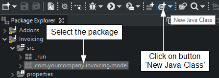
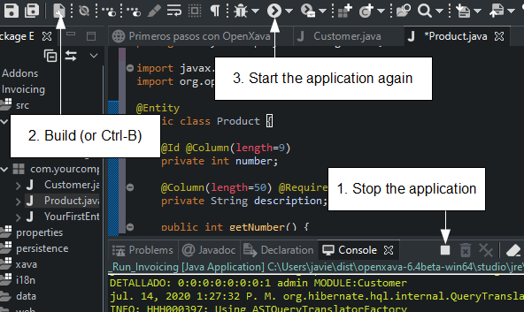

Getting started with
OpenXava
Follow this guide to create and run your first OpenXava project.
Creating
a new project
First, you have to create a new
Java project:

Then a wizard will appear. Just type the project name,
Invoicing.
Beware of writing the
I of
Invoicing in uppercase in
order that the links below work correctly. Click the
Finish
button:

Then OpenXava Studio will ask you:

Just click on Don't Create.
After this step you have an empty
Java project named
Invoicing:

Now you must convert it into an OpenXava project:

Now you have to type the project name. Just type
Invoicing and
click OK. Wait a few second until it finishes, then you'll have a full
OpenXava project there:

Your project is ready to start to write code.
Creating
your first entity
Developing the application is very easy. You only have to add entities in
order to make your application grow. We start with a simple version of
Customer
with only
number and
description.
Select the
com.yourcompany.invoicing.model
package and click on
New Java Class button:

Then type
Customer as class name and press
Finish.

Note that the
C of
Customer is uppercase, this is very
important, all Java classes start by uppercase. You have learned how to
create a Java class in Eclipse.
The initial code that Eclipse provides for
Customer is pretty
simple:
package com.yourcompany.invoicing.model;
public class Customer {
}
Now, you have to fill this class
in order to convert it to an entity suitable for OpenXava. You only need
to add the @Entity annotation, the number and the description
properties:
package com.yourcompany.invoicing.model;
import javax.persistence.*;
import org.openxava.annotations.*;
@Entity // This marks Customer class as an entity
public class Customer {
@Id // The number property is the key property. Keys are required by default
@Column(length=6) // The column length is used at the UI level and the DB level
private int number;
@Column(length=50) // The column length is used at the UI level and the DB level
@Required // A validation error will be shown if the name property is left empty
private String name;
public int getNumber() {
return number;
}
public void setNumber(int number) {
this.number = number;
}
public String getName() {
return name;
}
public void setName(String name) {
this.name = name;
}
}
At last you have enough code (just
one class) to run your application. Let's run it.
Running
the application
First, build your project clicking on the
Build All button or
pressing Ctrl-B:

Click the right mouse button on
_Run_Invoicing.java (in
src/_run)
and select
Run As > Java Application:

Your application is already running. To check this, open your favorite
browser (Chrome, Firefox, Internet Explorer 11, Edge or Safari) and go to
the next URL:
http://localhost:8080/Invoicing
You get your application running
for the first time. To start click on SIGN IN button

Now, enter admin/admin and click
on SIGN IN:

Then on top the left you will
have a list of modules, choose
Customers:

Use the
Customers module to create new customers, just enter
number and name and press
Save.

Click on
List to see the list of created customers.
Congratulations, you have your environment configured and your application
running.
Modifying
the application
From now on, developing the application with OpenXava is very easy. Just
write a class and go to your browser to see the result. Let's create a new
entity for
Product.
Select the
com.yourcompany.invoicing.model
package and click on
New Java Class button:
Then type
Product as class name and press
Finish. TMP
ME QUEDÉ POR AQUÍ. FALTA HACER EL PANTALLAZO DE ABAJO
Write the next code for Product:
package com.yourcompany.invoicing.model;
import javax.persistence.*;
import org.openxava.annotations.*;
@Entity
public class Product {
@Id @Column(length=9)
private int number;
@Column(length=50) @Required
private String description;
public int getNumber() {
return number;
}
public void setNumber(int number) {
this.number = number;
}
public String getDescription() {
return description;
}
public void setDescription(String description) {
this.description = description;
}
}
Now, stop the application, build
(Ctrl-B) and start the application again:

To see your new entity in action
open your browser and go to the URL:
http://localhost:8080/Invoicing/modules/Product
After sign in with admin/admin
you'll get:

Yes, you have a new module running, and just writing a simple class. Now
you can concentrate on growing your application.
Our goal: A small invoicing application
The application chosen is a small invoicing application with invoices,
customers, products and so on. This application is just a brief way to
learn some typical cases in business applications. You can apply
everything you learn with the invoicing application to any other business
application of any other domain.
On the other hand, this invoicing application is a didactic tool. You are
advised not to use it “as is” for a real invoicing system.
Summary
After this lesson you have installed Eclipse and OpenXava. Moreover, you
have configured everything in order to work. Now, you have your
environment ready to develop your application.
Also, you have the very first version of your
Invoicing
application running.
But the most important thing is that you have learned how to create a new
project, a new class, how to run an OpenXava module and other useful
things that you will need to use in the rest of the course.
You're ready to continue to the next lesson, however you should consider
to have a look at some base knowledge, such as:
Download source code of this lesson
Any problem with this lesson? Ask in the forum Everything fine?
Go to Lesson 2